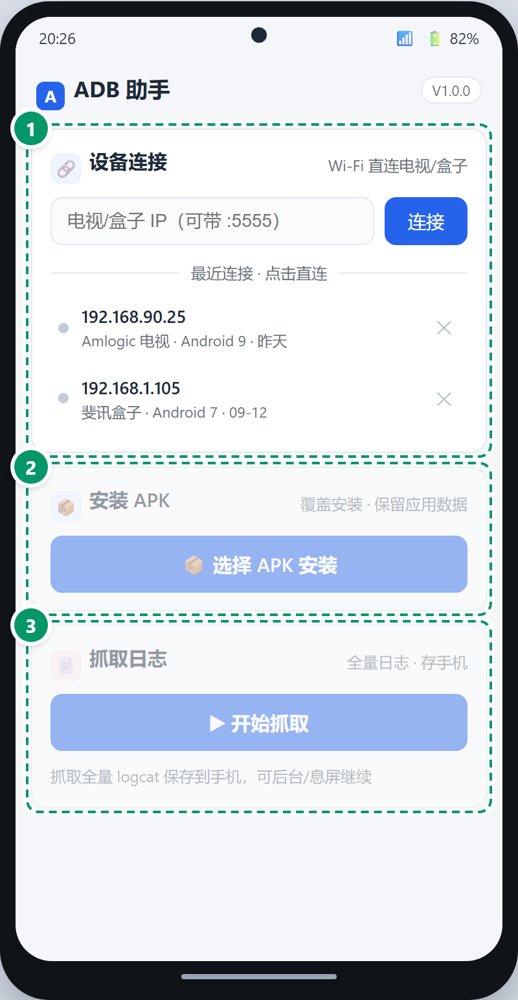
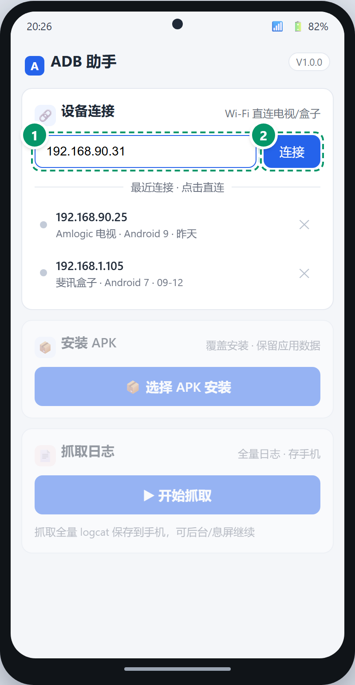
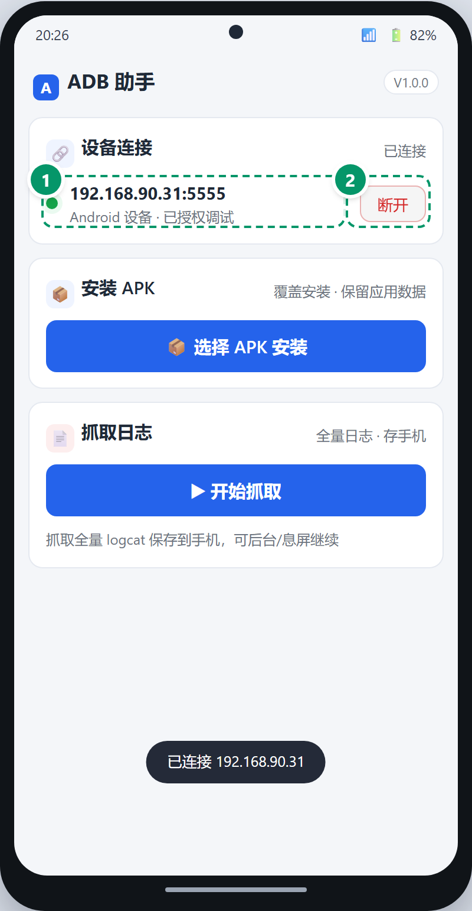
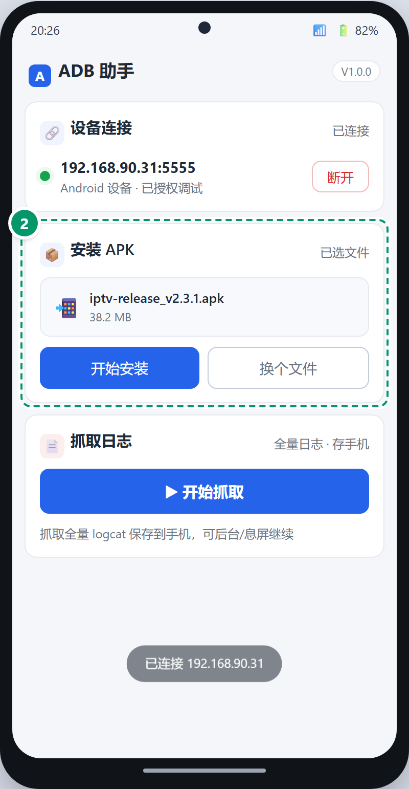
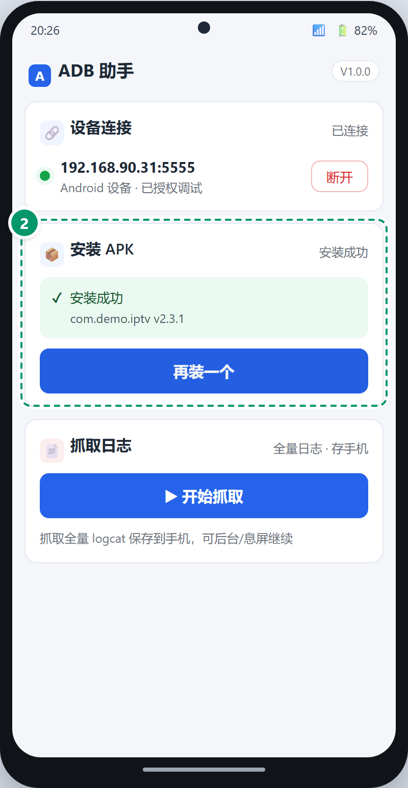
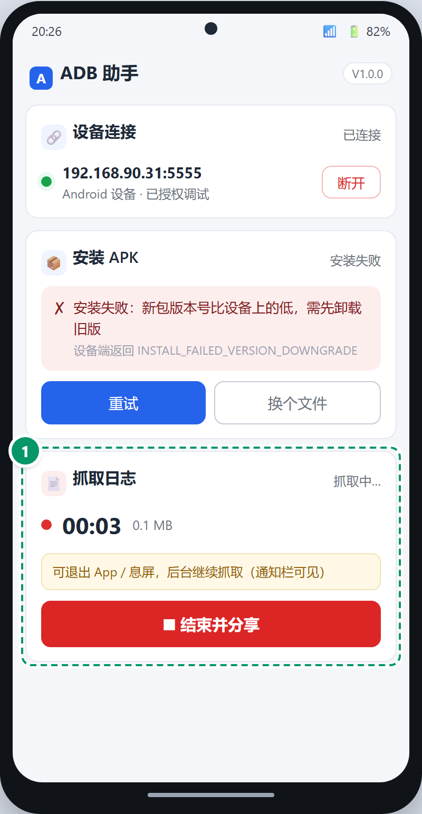
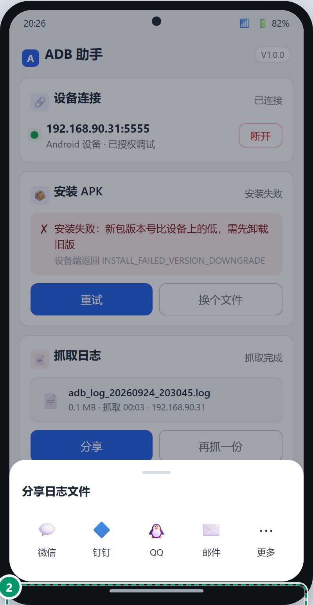

ADB-HELPER · ANDROID
ADB 助手
图解操作手册
安卓手机版 · 现场应急：装 APK · 抓日志
版本 V1.0.0Android 8.0+
每页一个功能：看图找绿圈 ❶❷❸ → 在 App 里点同一个按钮
无需电脑、无需命令行
ADB 助手 图解操作手册界面地图
先看这张图：三张卡片是干嘛的
App 只有一屏、三张卡片，从上到下按顺序用：

1
设备连接 —— 输电视 IP 连接，
连过的设备自动记住，点历史记录一键直连（第 1 章）。
2
安装 APK —— 把手机里收到的 APK
推到电视上安装（第 2 章）。
3
抓日志 —— 开始/结束两键抓电视日志，
结束直接分享到微信/钉钉（第 3 章）。
⚠ 顺序要求
没连接设备时，下面两卡置灰不可点——先连上电视，自动解锁。
ADB 助手 图解操作手册01 · 连接电视
01连接电视 / 盒子
前提：手机和电视连同一个 WiFi；电视设置里打开「ADB 调试」开关
（小米电视：设置→账号与安全→ADB 调试；其他品牌在设置里搜"调试"）。
1
在「设备连接」卡 ❶ 输入电视的 IP
（电视上：设置→网络 里能查到，形如 192.168.90.31）。
2
点 ❷「连接」。首次连接时
电视屏幕会弹授权框，勾"始终允许"再点允许。
3
状态灯变绿、显示型号 = 连上了，下面两卡自动解锁。


▲ ❶ 输入 IP → ❷ 点「连接」 → 连上后显示电视信息
💡 下次再连
App 记住连过的设备：点历史记录一行就直连；行尾 × 可删掉不要的记录。
⚠ 连不上时
电视 ADB 开关是否打开 → IP 是否变了（电视重启后会变）→ 是否同一 WiFi → 电视是否休眠（先唤醒）。
ADB 助手 图解操作手册02 · 安装 APK
02给电视装 APK
把微信/QQ 里收到的 APK 安装包推到电视上装，覆盖安装、电视上原有数据保留。
1
点 ❶「选择 APK 安装」，
在手机文件里找到收到的 APK 文件。
2
选完显示文件名和大小 → 点 ❷「开始安装」，
等"正在传输并安装"提示走完（大包需稍等）。
3
✓ 安装成功即完成，电视桌面上能看到新应用；
失败时会给中文原因（比如"新包版本号比设备上已装的旧" = 需先卸载电视上的旧版）。


▲ ❶ 选 APK → ❷ 开始安装 → ✓ 成功
ADB 助手 图解操作手册03 · 抓日志并分享
03抓日志，当场发微信群
两键式：开始抓取 → 去电视上复现问题 → 结束并分享。
抓取时可退出 App、可息屏，后台继续抓。
3
回 App 点「结束并分享」→ 弹出 ❷ 分享面板 →
选微信/钉钉/QQ，当场发回群里。


▲ ❶ 抓取中（计时走表） → ❷ 结束后直接拉起分享
💡 提示
日志文件名和电脑版工具一致（adb_log_日期_时间.log），开发拿到直接能看；
抓取中设备断开会自动停止保护，已抓的内容不丢。
ADB 助手 · 图解操作手册
安卓版 V1.0.0 ｜ 基础功能速用版
与桌面版 ADB 工具配合使用